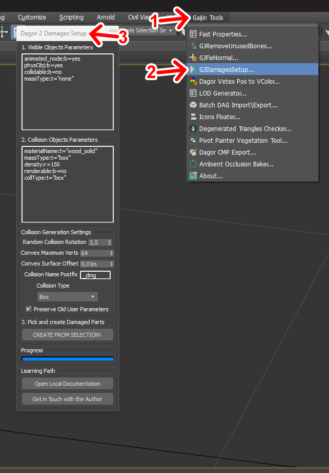
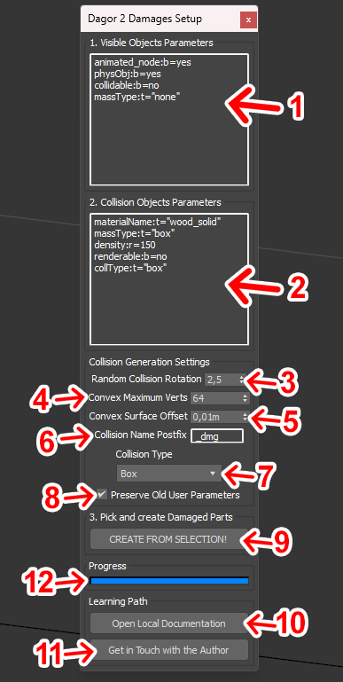
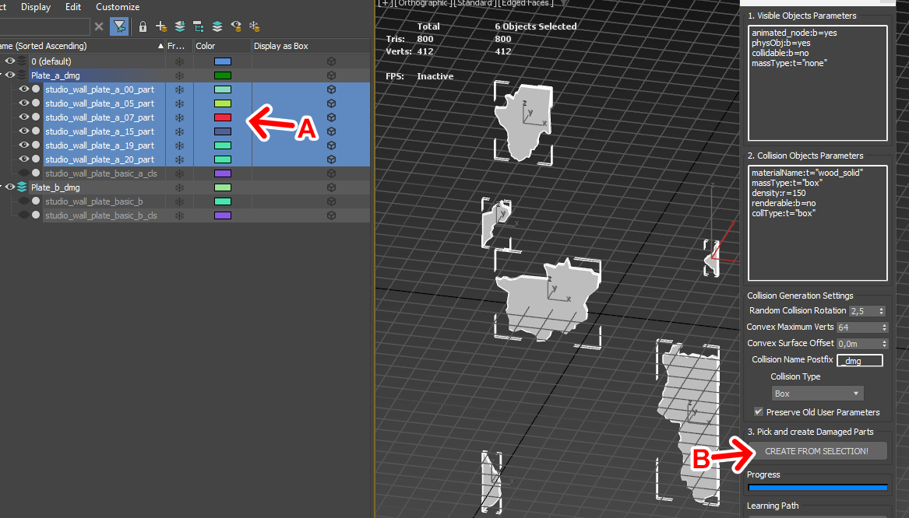
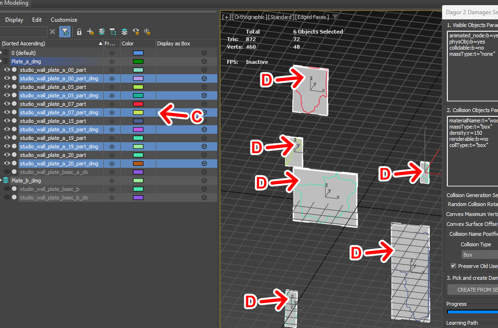

Dagor Damages Setup Tool
Installation
Install the script following the provided instructions.
Important
This script requires 3ds Max 2013 or newer version to run.
Accessing the Damage Setup Tool
Navigate to Gaijin Tools 1 > Damage Objects Setup… 2. This will open the main window of the Dagor Damages Setup 3.
To verify the version of the script, go to Gaijin Tools 1 > About. The About window will display the current version. It’s important to check this regularly to ensure your script is up to date.

{kind=link}
Note
Make sure that the plugin version is at least 1.4.
Configuring the Damage Setup Tool
Download the following test scene:
dmg_example.max
and open the downloaded project in 3ds Max.
Note
The minimum supported version for this file is 3ds Max 2018.
Open the utility window:

Parameters:
Visible Object Parameters 1: defines parameters for object chunks that will be visually displayed in the game. Default settings are optimized for most cases but can be customized as needed.
Collision Object Parameters 2: sets parameters for the collisions generated by the tool. These are pre-configured for common use cases, but you can modify them to fit specific requirements.
Collision Rotation 3: adjusts the rotation limits for generated collisions to create more natural-looking destruction effects.
Max Points in Collision 4: specifies the maximum number of points in a generated collision. This option is only active if a convex hull is selected as the collision type.
Collision Surface Displacement 5: defines the displacement of the collision surface relative to the object surface. This setting is also only active when using a convex hull collision type.
Collision Name Postfix6: adds a postfix to the names of generated collisions to easily distinguish them from other objects.
Collision Type 7: selects the type of collision to generate. The default is a box, but other options include sphere, capsule, and convex hull.
Overwrite Existing Parameters 8: determines whether the existing parameters in “Visible Object Parameters” and “Collision Object Parameters” will be overwritten. If unchecked, all existing parameters will be removed and replaced with the new ones.
Generate Collisions 9: after selecting the objects for which you want to generate collisions, click this button to start the process.
Documentation 10: links to this documentation.
Contact Author 11: provides contact information for the developer if assistance is needed.
Progress Bar 12: displays the progress of the scene processing. For scenes with many objects (50-100), this may take several minutes.
Generating Collisions
Select the objects you want to generate collisions for A.
Prepare them for export to the engine.
Click the Generate button B.

{kind=link}
Reviewing Generated Collisions
After processing, a list of new objects C and generated collisions D will appear.
{kind=link}
